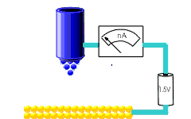
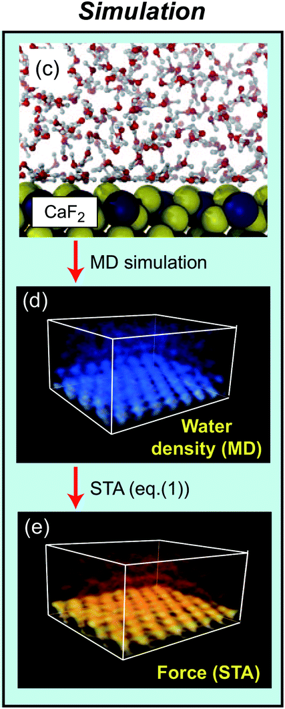
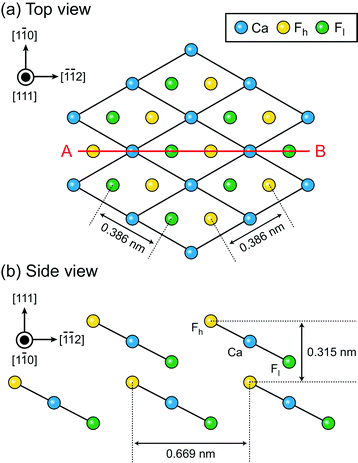

What is objective reality?¶
Or What is a Scientific measurement?¶
Can we 'see' atoms?

Is mathematics produced by people, or found?
Or What is a Scientific measurement?¶
We build a model with applied mathematics and use the model to predict / interpret what we observe in an experiment.
“Any model we make does not describe the universe it describes what our brains are capable of saying at this time.”
— Robert Anton Wilson
The model only gives us information within the area we expect it to work.
Whilst the model is useful in explaining / predicting data we use it. We do not believe in it, we just expect it will give sensible results where it has been tested.
Can we see atoms?¶
Scanning probe microscopes¶
 |
Atomic force microscopy (left) and Scanning Tunnelling microscopy (right) |
 |
- Local measurements.
- Resolution of picometers ($10^{-12}$ m)
- Size of an atom is of the order 10 nanometers ($10^{-9}$ m)
- We look at a flat surface of a material - what is a surface at the atomic scale?
What is a surface?¶
Start with a perfect crystal - use symmetry (and simple group theory) to build models

What is a surface?¶
Start with a perfect crystal - use symmetry (and simple group theory) to build models

What is a surface?¶
Start with a perfect crystal - use symmetry (and simple group theory) to build models

What is a surface?¶
Start with a perfect crystal - use symmetry (and simple group theory) to build models

What is a surface?¶

What is a surface?¶

What is a surface?¶

What is a surface?¶

When a surface is cut, it is 'unhappy' and atoms move to find 'peace'.

Aside: Crystal Shape?¶
This is why crystals have different shapes - they expose the most stable surfaces most often.
 |

| 
|
Microscopes?¶
Optical microscopes can magnify by up to ~ x1000
After that Scanning Electron Microscopes (SEM) can go further: Here are some SEM images
A staple, x35

Dandelion x100 |

Some pollen x500 |

AFM cantilever tip, x3000 |
Can we see atoms?¶
Scanning probe microscopes¶
|
Atomic force microscopy (left) and Scanning Tunnelling microscopy (right) |
- Local measurements.
- Resolution of picometers ($10^{-12}$ m)
- Size of an atom is of the order 10 nanometers ($10^{-9}$ m)
- We look at a flat surface of a material - what is a surface at the atomic scale?
build a model of an AFM¶
Model the cantilever oscilations using differential equations: $$ \ddot{z} + \omega_{0}^{2} \alpha \dot{z} + \omega_0^2 z - \frac{\omega_0^2}{k}F(z) = \frac{\omega_0^2}{k}F_{ext} $$ Complicated because $F(z)$ depends on the position. $F(z)$ is the interaction of the microscope with the sample.
We can work in constant amplitude and frequency change $$ \ddot{z} + \omega_0^2 z - \frac{\omega_0^2}{k}F(z) = 0 $$
motion is periodic, we can find a solution of the form using a truncated Fourier Series $$ \big(\frac{\omega}{\omega_0}\big)^2 = \frac{1}{\pi k A_1} \int_0^{2 \pi} F(z) \cos (\tau) d\tau $$
Hofer, Werner A., Adam S. Foster, and Alexander L. Shluger. "Theories of scanning probe microscopes at the atomic scale." Reviews of Modern Physics 75.4 (2003): 1287.
Macro vs Nano¶
|
|
cantilever is macroscopic, tip apex is nanoscopic
experiment measures frequency change due to all interactions - macro + nano
This is cool - a macroscopic object is 'seeing' atoms.
Map is not the territory¶
Nottingham Nanoscience group's papers as PDFs (Phil is an extremely good guitarist;)
|  |
2 sided strategy:Compare experiment and simulation data. If they agree, we can think that our model gives a reasonable description of the experiment, until we find where it breaks down. 
K Miyazawa, N Kobayashi, MW, AL Shluger, K Amano, T Fukuma, Nanoscale 8, 7334 (2016) |
 |
Modelling SPMs¶
To model our AFM we need to calculate $F(x,y,z)$ as the tip is located at different locations over the surface
Need a forcefield for classical calculations - bonds, angles, torsions, charges etc for all atoms
Or use Quantum Mechanical calculations (Density Functional Theory (~1000x slower) than forcefield)
For AFM we need the to calculate the force on a tip model on a 3D grid (1000s of calculations)
The calculations are large - we use lots of linear algebra. We need to diagonalize matrices of order 10,000 using a variety of techniques.
We use scientific high performance computing techniques.
Hofer, Werner A., Adam S. Foster, and Alexander L. Shluger. "Theories of scanning probe microscopes at the atomic scale." Reviews of Modern Physics 75.4 (2003): 1287.
Qualitative comparison of data¶
|  | #
|
K Miyazawa, N Kobayashi, MW, AL Shluger, K Amano, T Fukuma, Nanoscale 8, 7334 (2016)
What is objective reality?¶
Or What is a Scientific measurement?¶
Can we 'see' atoms?

The experimental signals are in very good agreement with our model expectations in many cases.
We can't 'see' atoms, but we can produce signals that can be measured by extensions of our senses that are exactly what we expect atoms to produce.
For some value of 'see' we can see atoms, and move them.
Conclusions¶
Many microscopes, much data, lots of ways of operating
Very successful collaborations between theory, computational and experimental groups to unravel the physics of systems.
Thanks to¶
- Leverhulme Trust and EU for funding
- Alex Shluger, University College London
- Takeshi Fukuma, Kanazawa University
- Adam Foster, Aalto
- Bernhard Reischl, Curtin University